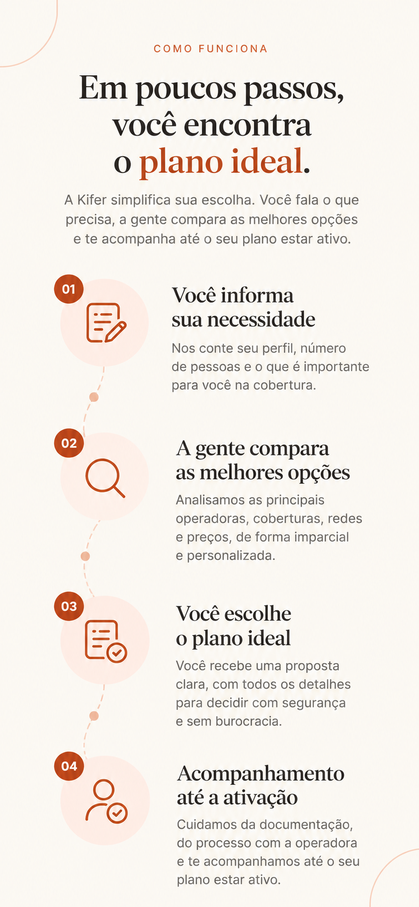
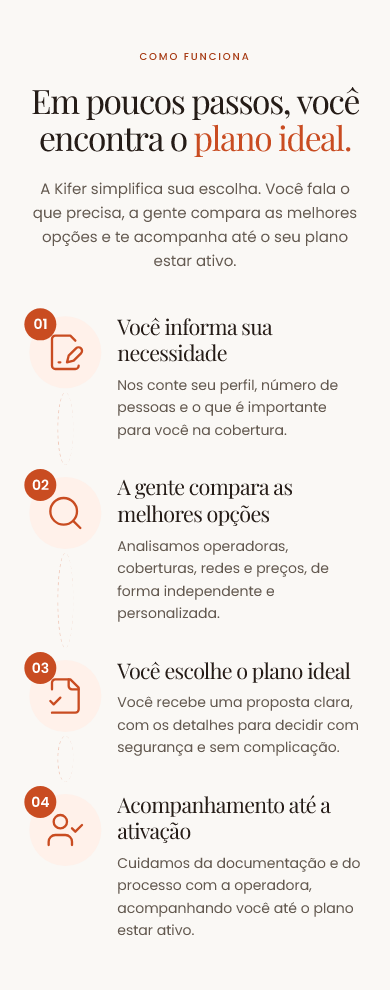
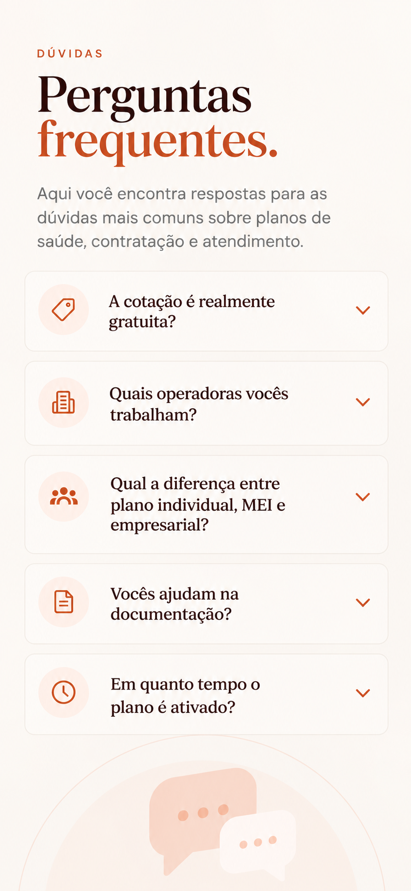
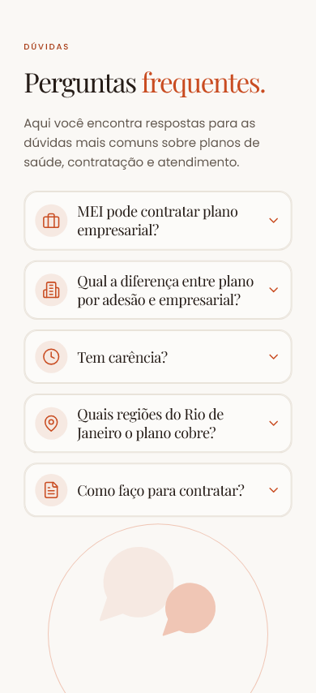

01 — Abertura
Foto 1. Curva lateral no desktop; máscara ampla e onda inferior no celular. Zoom e ponto focal próprios.

02 — Confiança e operadoras
Foto 2. Caneca/notebook, moldura com base reta, arco superior e formas claras separadas. Cinco operadoras reais preservadas.
03 — Para quem é — Pessoa física
Foto 3. Família, silhueta orgânica e curva inferior. Os três perfis continuam funcionais e com dimensões estáveis.

04 — Como funciona
Sem fotografia. Composição e conteúdo preservados.



05 — Depoimentos
Retratos 5, 6 e 7 reservados. Não há relatos reais aprovados; a seção mantém o estado vazio. A diferença para a referência é intencional.

06 — Sobre a Luíza
Foto 8. Mesa, caneca e notebook voltam à composição. Máscara inferior própria no mobile e arco independente da fotografia.

07 — Dúvidas frequentes
Sem fotografia. Perguntas reais e interação preservadas.



08 — Cotação
Foto 9, diferente da família do painel. Família parcialmente atrás do formulário no desktop e ao lado da apresentação no mobile. O formulário real inclui validações e informações de privacidade ausentes na referência.

09 — WhatsApp
Foto 10 em composição única com o telefone. Mantido o limite de proporção do mockup no celular e a conversa identificada como ilustrativa.

10 — Rodapé
Sem fotografia. Contatos, links e conteúdo reais preservados.

Estados MEI e Empresa
Não foram fornecidas telas de referência específicas destes dois estados. A composição segue o painel de Pessoa Física; o conteúdo e os CTAs de cada perfil foram mantidos.
MEI
Empresa
As dez fotografias fornecidas
Cópias integrais dos arquivos enviados. Os sete ativos usados foram codificados em WebP na resolução original, sem recorte destrutivo. Os três retratos reservados não são enviados para a página pública.
1 · Em uso
1448 × 1086
public/images/home/luiza-opening.webp
2 · Em uso
1448 × 1086
public/images/home/trust-coffee.webp
3 · Em uso
1448 × 1086
public/images/home/family-profile.webp
4 · Em uso
1448 × 1086
public/images/home/mei-office.webp
5 · Reservado
1122 × 1402
output/playwright/home-photography/originals/testimonial-main-reserved.png
6 · Reservado
1254 × 1254
output/playwright/home-photography/originals/testimonial-mei-reserved.png
7 · Reservado
1254 × 1254
output/playwright/home-photography/originals/testimonial-company-reserved.png
8 · Em uso
1448 × 1086
public/images/home/luiza-about-editorial.webp
9 · Em uso
1448 × 1086
public/images/home/family-quote.webp
10 · Em uso
1122 × 1402
public/images/home/luiza-portrait.webp